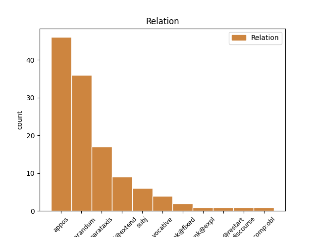
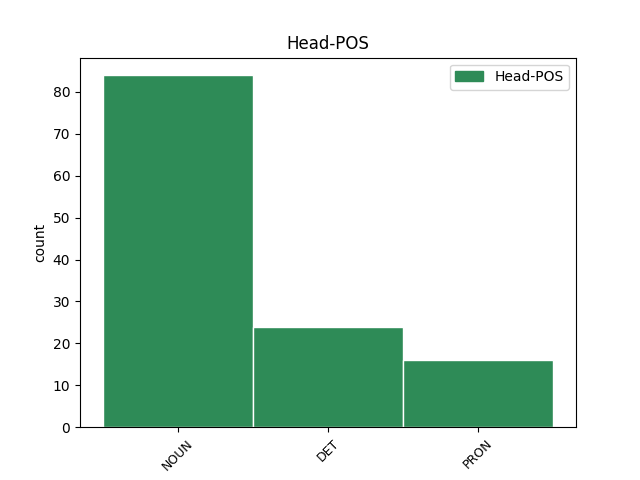
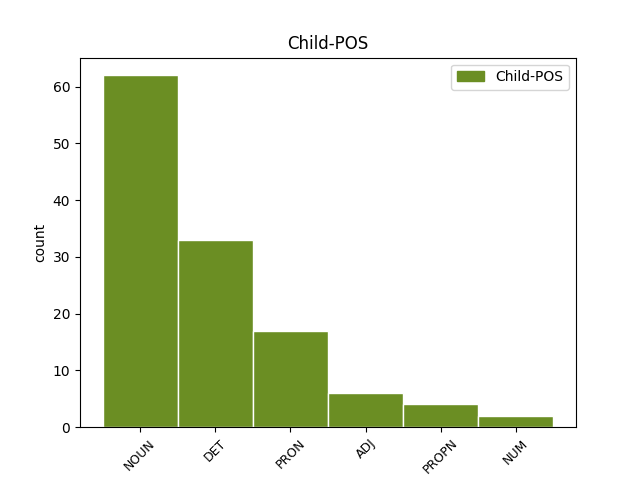

Distribution of features within this leaf



Agreement Rules sorted by frequency.
- When the dependent token is the appositional modifier(appos) of the head token, and the head token is NOUN and the dependent token is NOUN.
1 te _ _ _ _ 0 _ _ _
2 proge proga NOUN Ncfpn Case=Nom|Gender=Fem|Number=Plur 0 _ _ _
3 gor _ _ _ _ 0 _ _ _
4 recimo _ _ _ _ 0 _ _ _
5 eee _ _ _ _ 0 _ _ _
6 sedežnice sedežnica NOUN Ncfpn Case=Nom|Gender=Fem|Number=Plur 2 appos _ msd=Sozmi|word=sedežnice
7 vlečnice _ _ _ _ 0 _ _ _
8 pa _ _ _ _ 0 _ _ _
9 to _ _ _ _ 0 _ _ _
10 vse _ _ _ _ 0 _ _ _
11 je _ _ _ _ 0 _ _ _
12 recimo _ _ _ _ 0 _ _ _
13 šest _ _ _ _ 0 _ _ _
14 petnajst _ _ _ _ 0 _ _ _
15 trinajst _ _ _ _ 0 _ _ _
16 in _ _ _ _ 0 _ _ _
17 ob _ _ _ _ 0 _ _ _
18 in _ _ _ _ 0 _ _ _
19 proga _ _ _ _ 0 _ _ _
20 je _ _ _ _ 0 _ _ _
21 recimo _ _ _ _ 0 _ _ _
22 rdeča _ _ _ _ 0 _ _ _
23 narisana _ _ _ _ 0 _ _ _
24 pač _ _ _ _ 0 _ _ _
25 rdeča _ _ _ _ 0 _ _ _
26 srednje _ _ _ _ 0 _ _ _
27 težka _ _ _ _ 0 _ _ _
28 ali _ _ _ _ 0 _ _ _
29 pa _ _ _ _ 0 _ _ _
30 modra _ _ _ _ 0 _ _ _
31 pa _ _ _ _ 0 _ _ _
32 je _ _ _ _ 0 _ _ _
33 številka _ _ _ _ 0 _ _ _
34 sedem _ _ _ _ 0 _ _ _
35 ali _ _ _ _ 0 _ _ _
36 pa _ _ _ _ 0 _ _ _
37 ta _ _ _ _ 0 _ _ _
38 je _ _ _ _ 0 _ _ _
39 devet _ _ _ _ 0 _ _ _
40 ali _ _ _ _ 0 _ _ _
41 pa _ _ _ _ 0 _ _ _
42 ne _ _ _ _ 0 _ _ _
43 vem _ _ _ _ 0 _ _ _
44 koliko _ _ _ _ 0 _ _ _
1 ja _ _ _ _ 0 _ _ _
2 to ta DET Pd-nsn Case=Nom|Gender=Neut|Number=Sing|PronType=Dem 3 reparandum _ msd=Zk-sei|word=to
3 to ta DET Pd-nsn Case=Nom|Gender=Neut|Number=Sing|PronType=Dem 0 _ _ _
4 pa _ _ _ _ 0 _ _ _
5 res _ _ _ _ 0 _ _ _
6 ja _ _ _ _ 0 _ _ _
1 kaj kaj PRON Pq-nsn Case=Nom|Gender=Neut|Number=Sing|PronType=Int 2 reparandum _ msd=Zv-sei|word=kaj
2 kaj kaj PRON Pq-nsn Case=Nom|Gender=Neut|Number=Sing|PronType=Int 0 _ _ _
3 na _ _ _ _ 0 _ _ _
4 obrazu _ _ _ _ 0 _ _ _
5 se _ _ _ _ 0 _ _ _
6 spreminja _ _ _ _ 0 _ _ _
7 pri _ _ _ _ 0 _ _ _
8 mimiki _ _ _ _ 0 _ _ _
9 ? _ _ _ _ 0 _ _ _
1 uuu _ _ _ _ 0 _ _ _
2 nisem _ _ _ _ 0 _ _ _
3 zdajle _ _ _ _ 0 _ _ _
4 za _ _ _ _ 0 _ _ _
5 raču _ _ _ _ 0 _ _ _
6 [gap] _ _ _ _ 0 _ _ _
7 nep nep NOUN Ncmsn Case=Nom|Gender=Masc|Number=Sing 0 _ _ _
8 nep nep NOUN Ncmsn Case=Nom|Gender=Masc|Number=Sing 7 parataxis _ msd=Somei|word=Nep
9 ja _ _ _ _ 0 _ _ _
1 te _ _ _ _ 0 _ _ _
2 proge _ _ _ _ 0 _ _ _
3 gor _ _ _ _ 0 _ _ _
4 recimo _ _ _ _ 0 _ _ _
5 eee _ _ _ _ 0 _ _ _
6 sedežnice sedežnica NOUN Ncfpn Case=Nom|Gender=Fem|Number=Plur 0 _ _ _
7 vlečnice _ _ _ _ 0 _ _ _
8 pa _ _ _ _ 0 _ _ _
9 to ta DET Pd-nsn Case=Nom|Gender=Neut|Number=Sing|PronType=Dem 6 conj@extend _ msd=Zk-sei|word=to
10 vse _ _ _ _ 0 _ _ _
11 je _ _ _ _ 0 _ _ _
12 recimo _ _ _ _ 0 _ _ _
13 šest _ _ _ _ 0 _ _ _
14 petnajst _ _ _ _ 0 _ _ _
15 trinajst _ _ _ _ 0 _ _ _
16 in _ _ _ _ 0 _ _ _
17 ob _ _ _ _ 0 _ _ _
18 in _ _ _ _ 0 _ _ _
19 proga _ _ _ _ 0 _ _ _
20 je _ _ _ _ 0 _ _ _
21 recimo _ _ _ _ 0 _ _ _
22 rdeča _ _ _ _ 0 _ _ _
23 narisana _ _ _ _ 0 _ _ _
24 pač _ _ _ _ 0 _ _ _
25 rdeča _ _ _ _ 0 _ _ _
26 srednje _ _ _ _ 0 _ _ _
27 težka _ _ _ _ 0 _ _ _
28 ali _ _ _ _ 0 _ _ _
29 pa _ _ _ _ 0 _ _ _
30 modra _ _ _ _ 0 _ _ _
31 pa _ _ _ _ 0 _ _ _
32 je _ _ _ _ 0 _ _ _
33 številka _ _ _ _ 0 _ _ _
34 sedem _ _ _ _ 0 _ _ _
35 ali _ _ _ _ 0 _ _ _
36 pa _ _ _ _ 0 _ _ _
37 ta _ _ _ _ 0 _ _ _
38 je _ _ _ _ 0 _ _ _
39 devet _ _ _ _ 0 _ _ _
40 ali _ _ _ _ 0 _ _ _
41 pa _ _ _ _ 0 _ _ _
42 ne _ _ _ _ 0 _ _ _
43 vem _ _ _ _ 0 _ _ _
44 koliko _ _ _ _ 0 _ _ _
1 eee _ _ _ _ 0 _ _ _
2 to _ _ _ _ 0 _ _ _
3 je _ _ _ _ 0 _ _ _
4 eem _ _ _ _ 0 _ _ _
5 eee _ _ _ _ 0 _ _ _
6 rastlina _ _ _ _ 0 _ _ _
7 oddaja _ _ _ _ 0 _ _ _
8 kisik kisik NOUN Ncmsan Animacy=Inan|Case=Acc|Gender=Masc|Number=Sing 15 reparandum _ msd=Sometn|word=kisik
9 ki _ _ _ _ 0 _ _ _
10 ga _ _ _ _ 0 _ _ _
11 j _ _ _ _ 0 _ _ _
12 [gap] _ _ _ _ 0 _ _ _
13 eee _ _ _ _ 0 _ _ _
14 ogljikov _ _ _ _ 0 _ _ _
15 dioksid dioksid NOUN Ncmsan Animacy=Inan|Case=Acc|Gender=Masc|Number=Sing 0 _ _ _
16 ki _ _ _ _ 0 _ _ _
17 ga _ _ _ _ 0 _ _ _
18 ne _ _ _ _ 0 _ _ _
19 potrebuje _ _ _ _ 0 _ _ _
1 o _ _ _ _ 0 _ _ _
2 spoštovane _ _ _ _ 0 _ _ _
3 in _ _ _ _ 0 _ _ _
4 spoštovani _ _ _ _ 0 _ _ _
5 mi _ _ _ _ 0 _ _ _
6 pa _ _ _ _ 0 _ _ _
7 gremo _ _ _ _ 0 _ _ _
8 naprej _ _ _ _ 0 _ _ _
9 sedem _ _ _ _ 0 _ _ _
10 je _ _ _ _ 0 _ _ _
11 ura _ _ _ _ 0 _ _ _
12 in _ _ _ _ 0 _ _ _
13 triinštirideset _ _ _ _ 0 _ _ _
14 minut _ _ _ _ 0 _ _ _
15 nova _ _ _ _ 0 _ _ _
16 nagradna _ _ _ _ 0 _ _ _
17 igra igra NOUN Ncfsn Case=Nom|Gender=Fem|Number=Sing 0 _ _ _
18 na _ _ _ _ 0 _ _ _
19 frekvencah _ _ _ _ 0 _ _ _
20 eee _ _ _ _ 0 _ _ _
21 radia _ _ _ _ 0 _ _ _
22 capris _ _ _ _ 0 _ _ _
23 in _ _ _ _ 0 _ _ _
24 sicer _ _ _ _ 0 _ _ _
25 bogatejši bogat ADJ Agcmpn Case=Nom|Degree=Cmp|Gender=Masc|Number=Plur 17 appos _ msd=Pppmmi|word=Bogatejši
26 od _ _ _ _ 0 _ _ _
27 soseda _ _ _ _ 0 _ _ _
1 tudi _ _ _ _ 0 _ _ _
2 drugi _ _ _ _ 0 _ _ _
3 napadalec napadalec NOUN Ncmsn Case=Nom|Gender=Masc|Number=Sing 0 _ _ _
4 izjemni _ _ _ _ 0 _ _ _
5 david David PROPN Npmsn Case=Nom|Gender=Masc|Number=Sing 3 appos _ msd=Slmei|word=Dejvid
6 healy _ _ _ _ 0 _ _ _
7 je _ _ _ _ 0 _ _ _
8 imel _ _ _ _ 0 _ _ _
9 priložnost _ _ _ _ 0 _ _ _
10 da _ _ _ _ 0 _ _ _
11 premaga _ _ _ _ 0 _ _ _
12 arturja _ _ _ _ 0 _ _ _
13 boruca _ _ _ _ 0 _ _ _
14 toda _ _ _ _ 0 _ _ _
15 tudi _ _ _ _ 0 _ _ _
16 njemu _ _ _ _ 0 _ _ _
17 to _ _ _ _ 0 _ _ _
18 ni _ _ _ _ 0 _ _ _
19 uspelo _ _ _ _ 0 _ _ _
1 vaš _ _ _ _ 0 _ _ _
2 komentar komentar NOUN Ncmsn Case=Nom|Gender=Masc|Number=Sing 0 _ _ _
3 kaj _ _ _ _ 0 _ _ _
4 pravzaprav _ _ _ _ 0 _ _ _
5 vi _ _ _ _ 0 _ _ _
6 eee _ _ _ _ 0 _ _ _
7 o _ _ _ _ 0 _ _ _
8 tem _ _ _ _ 0 _ _ _
9 mmm _ _ _ _ 0 _ _ _
10 menite _ _ _ _ 0 _ _ _
11 kako _ _ _ _ 0 _ _ _
12 ste _ _ _ _ 0 _ _ _
13 videli _ _ _ _ 0 _ _ _
14 nebesedno _ _ _ _ 0 _ _ _
15 k _ _ _ _ 0 _ _ _
16 [gap] _ _ _ _ 0 _ _ _
17 komunikacijo _ _ _ _ 0 _ _ _
18 ste _ _ _ _ 0 _ _ _
19 pozorni _ _ _ _ 0 _ _ _
20 na _ _ _ _ 0 _ _ _
21 eem _ _ _ _ 0 _ _ _
22 govorce _ _ _ _ 0 _ _ _
23 pet _ _ _ _ 0 _ _ _
24 jih _ _ _ _ 0 _ _ _
25 je _ _ _ _ 0 _ _ _
26 bilo _ _ _ _ 0 _ _ _
27 kdo kdo PRON Pq-msn Case=Nom|Gender=Masc|Number=Sing|PronType=Int 2 parataxis _ msd=Zv-mei|word=kdo
28 kako _ _ _ _ 0 _ _ _
1 ker _ _ _ _ 0 _ _ _
2 je _ _ _ _ 0 _ _ _
3 težka _ _ _ _ 0 _ _ _
4 borba _ _ _ _ 0 _ _ _
5 za _ _ _ _ 0 _ _ _
6 eee _ _ _ _ 0 _ _ _
7 tisto tisti DET Pd-nsa Case=Acc|Gender=Neut|Number=Sing|PronType=Dem 0 _ _ _
8 prostor prostor NOUN Ncmsan Animacy=Inan|Case=Acc|Gender=Masc|Number=Sing 7 appos _ msd=Sometn|word=prostor
1 v _ _ _ _ 0 _ _ _
2 posočju _ _ _ _ 0 _ _ _
3 očitno _ _ _ _ 0 _ _ _
4 običaj običaj NOUN Ncmsn Case=Nom|Gender=Masc|Number=Sing 0 _ _ _
5 da _ _ _ _ 0 _ _ _
6 najprej _ _ _ _ 0 _ _ _
7 naj _ _ _ _ 0 _ _ _
8 teče _ _ _ _ 0 _ _ _
9 kri _ _ _ _ 0 _ _ _
10 potem _ _ _ _ 0 _ _ _
11 bomo _ _ _ _ 0 _ _ _
12 pa _ _ _ _ 0 _ _ _
13 videli _ _ _ _ 0 _ _ _
14 če _ _ _ _ 0 _ _ _
15 bomo _ _ _ _ 0 _ _ _
16 kaj _ _ _ _ 0 _ _ _
17 naredili _ _ _ _ 0 _ _ _
18 najrajši _ _ _ _ 0 _ _ _
19 tudi _ _ _ _ 0 _ _ _
20 takrat _ _ _ _ 0 _ _ _
21 nič nič DET Pz-nsn Case=Nom|Gender=Neut|Number=Sing|PronType=Neg 4 parataxis _ msd=Zl-sei|word=nič
1 hvala _ _ _ _ 0 _ _ _
2 lepa _ _ _ _ 0 _ _ _
3 gospod _ _ _ _ 0 _ _ _
4 [name:surname] _ _ _ _ 0 _ _ _
5 replika replika NOUN Ncfsn Case=Nom|Gender=Fem|Number=Sing 0 _ _ _
6 [incident] _ _ _ _ 0 _ _ _
7 gospod gospod NOUN Ncmsn Case=Nom|Gender=Masc|Number=Sing 5 vocative _ msd=Somei|word=gospod
8 [name:surname] _ _ _ _ 0 _ _ _
1 no _ _ _ _ 0 _ _ _
2 in _ _ _ _ 0 _ _ _
3 sem _ _ _ _ 0 _ _ _
4 poklicala _ _ _ _ 0 _ _ _
5 na _ _ _ _ 0 _ _ _
6 vsa _ _ _ _ 0 _ _ _
7 planinska _ _ _ _ 0 _ _ _
8 društva _ _ _ _ 0 _ _ _
9 če _ _ _ _ 0 _ _ _
10 potrebujejo _ _ _ _ 0 _ _ _
11 koga kdo PRON Pq-msa Case=Acc|Gender=Masc|Number=Sing|PronType=Int 0 _ _ _
12 kakšnega _ _ _ _ 0 _ _ _
13 prostovoljca prostovoljec NOUN Ncmsay Animacy=Anim|Case=Acc|Gender=Masc|Number=Sing 11 appos _ msd=Sometd|word=prostovoljca
14 [:voice] _ _ _ _ 0 _ _ _
1 mislim _ _ _ _ 0 _ _ _
2 recimo _ _ _ _ 0 _ _ _
3 televizijo _ _ _ _ 0 _ _ _
4 ali _ _ _ _ 0 _ _ _
5 pa _ _ _ _ 0 _ _ _
6 … _ _ _ _ 0 _ _ _
7 če _ _ _ _ 0 _ _ _
8 jo _ _ _ _ 0 _ _ _
9 ukradejo _ _ _ _ 0 _ _ _
10 … _ _ _ _ 0 _ _ _
11 mhm _ _ _ _ 0 _ _ _
12 no _ _ _ _ 0 _ _ _
13 saj _ _ _ _ 0 _ _ _
14 to _ _ _ _ 0 _ _ _
15 mislim _ _ _ _ 0 _ _ _
16 ja _ _ _ _ 0 _ _ _
17 … _ _ _ _ 0 _ _ _
18 pa _ _ _ _ 0 _ _ _
19 računalniki računalnik NOUN Ncmpn Case=Nom|Gender=Masc|Number=Plur 0 _ _ _
20 pa _ _ _ _ 0 _ _ _
21 take _ _ _ _ 0 _ _ _
22 stvari stvar NOUN Ncfpn Case=Nom|Gender=Fem|Number=Plur 19 conj@extend _ msd=Sozmi|word=stvari
1 anja Anja PROPN Npfsn Case=Nom|Gender=Fem|Number=Sing 5 subj _ msd=Slzei|word=Anja
2 parson _ _ _ _ 0 _ _ _
3 torej _ _ _ _ 0 _ _ _
4 prva _ _ _ _ 0 _ _ _
5 smučarka smučarka NOUN Ncfsn Case=Nom|Gender=Fem|Number=Sing 0 _ _ _
6 ki _ _ _ _ 0 _ _ _
7 je _ _ _ _ 0 _ _ _
8 ostala _ _ _ _ 0 _ _ _
9 danes _ _ _ _ 0 _ _ _
10 brez _ _ _ _ 0 _ _ _
11 uvrstitve _ _ _ _ 0 _ _ _
12 in _ _ _ _ 0 _ _ _
13 tako _ _ _ _ 0 _ _ _
14 je _ _ _ _ 0 _ _ _
15 morda _ _ _ _ 0 _ _ _
16 tudi _ _ _ _ 0 _ _ _
17 zapravila _ _ _ _ 0 _ _ _
18 tretje _ _ _ _ 0 _ _ _
19 mesto _ _ _ _ 0 _ _ _
20 bronasto _ _ _ _ 0 _ _ _
21 medaljo _ _ _ _ 0 _ _ _
22 v _ _ _ _ 0 _ _ _
23 skupnem _ _ _ _ 0 _ _ _
24 seštevku _ _ _ _ 0 _ _ _
25 svetovnega _ _ _ _ 0 _ _ _
26 pokala _ _ _ _ 0 _ _ _
27 kajti _ _ _ _ 0 _ _ _
28 kathrin _ _ _ _ 0 _ _ _
29 zettel _ _ _ _ 0 _ _ _
30 zaostaja _ _ _ _ 0 _ _ _
31 petinštirideset _ _ _ _ 0 _ _ _
32 točk _ _ _ _ 0 _ _ _
33 za _ _ _ _ 0 _ _ _
34 parsonovo _ _ _ _ 0 _ _ _
1 pa _ _ _ _ 0 _ _ _
2 če _ _ _ _ 0 _ _ _
3 znam _ _ _ _ 0 _ _ _
4 od _ _ _ _ 0 _ _ _
5 b _ _ _ _ 0 _ _ _
6 [gap] _ _ _ _ 0 _ _ _
7 od _ _ _ _ 0 _ _ _
8 petih _ _ _ _ 0 _ _ _
9 pogojev pogoj NOUN Ncmpg Case=Gen|Gender=Masc|Number=Plur 0 _ _ _
10 pogojenih _ _ _ _ 0 _ _ _
11 mislim _ _ _ _ 0 _ _ _
12 tistih tisti DET Pd-mpg Case=Gen|Gender=Masc|Number=Plur|PronType=Dem 9 appos _ msd=Zk-mmr|word=tistih
13 pri _ _ _ _ 0 _ _ _
14 jeziku _ _ _ _ 0 _ _ _
15 ki _ _ _ _ 0 _ _ _
16 naj _ _ _ _ 0 _ _ _
17 bi _ _ _ _ 0 _ _ _
18 jih _ _ _ _ 0 _ _ _
19 poznal _ _ _ _ 0 _ _ _
20 štiri _ _ _ _ 0 _ _ _
21 mislim _ _ _ _ 0 _ _ _
22 tri _ _ _ _ 0 _ _ _
23 je _ _ _ _ 0 _ _ _
24 dosti _ _ _ _ 0 _ _ _
25 po _ _ _ _ 0 _ _ _
26 moje _ _ _ _ 0 _ _ _
1 ta _ _ _ _ 0 _ _ _
2 človek _ _ _ _ 0 _ _ _
3 se _ _ _ _ 0 _ _ _
4 tako _ _ _ _ 0 _ _ _
5 pisal _ _ _ _ 0 _ _ _
6 ka _ _ _ _ 0 _ _ _
7 to ta DET Pd-nsn Case=Nom|Gender=Neut|Number=Sing|PronType=Dem 8 subj _ msd=Zk-sei|word=to
8 fi fi NOUN Ncmsn Case=Nom|Gender=Masc|Number=Sing 0 _ _ _
9 ? _ _ _ _ 0 _ _ _
1 pa _ _ _ _ 0 _ _ _
2 te _ _ _ _ 0 _ _ _
3 smo _ _ _ _ 0 _ _ _
4 mi _ _ _ _ 0 _ _ _
5 to _ _ _ _ 0 _ _ _
6 ne _ _ _ _ 0 _ _ _
7 znali _ _ _ _ 0 _ _ _
8 kaj kaj PRON Pq-nsn Case=Nom|Gender=Neut|Number=Sing|PronType=Int 10 subj _ msd=Zv-sei|word=ka
9 to _ _ _ _ 0 _ _ _
10 ginazium ginazium NOUN Ncmsn Case=Nom|Gender=Masc|Number=Sing 0 _ _ _
11 ka _ _ _ _ 0 _ _ _
12 v _ _ _ _ 0 _ _ _
13 gimnazium _ _ _ _ 0 _ _ _
14 hodi _ _ _ _ 0 _ _ _
15 pa _ _ _ _ 0 _ _ _
16 te _ _ _ _ 0 _ _ _
17 smo _ _ _ _ 0 _ _ _
18 to _ _ _ _ 0 _ _ _
19 dolgo _ _ _ _ 0 _ _ _
20 ne _ _ _ _ 0 _ _ _
21 znali _ _ _ _ 0 _ _ _
22 te _ _ _ _ 0 _ _ _
23 oča _ _ _ _ 0 _ _ _
24 so _ _ _ _ 0 _ _ _
25 gučali _ _ _ _ 0 _ _ _
26 ka _ _ _ _ 0 _ _ _
27 naša _ _ _ _ 0 _ _ _
28 [name:personal] _ _ _ _ 0 _ _ _
29 v _ _ _ _ 0 _ _ _
30 nazium _ _ _ _ 0 _ _ _
31 hodi _ _ _ _ 0 _ _ _
32 gimnazium _ _ _ _ 0 _ _ _
33 tako _ _ _ _ 0 _ _ _
34 ka _ _ _ _ 0 _ _ _
35 sem _ _ _ _ 0 _ _ _
36 jih _ _ _ _ 0 _ _ _
37 poznal _ _ _ _ 0 _ _ _
1 pa _ _ _ _ 0 _ _ _
2 te _ _ _ _ 0 _ _ _
3 smo _ _ _ _ 0 _ _ _
4 mi _ _ _ _ 0 _ _ _
5 to _ _ _ _ 0 _ _ _
6 ne _ _ _ _ 0 _ _ _
7 znali _ _ _ _ 0 _ _ _
8 kaj _ _ _ _ 0 _ _ _
9 to ta DET Pd-nsn Case=Nom|Gender=Neut|Number=Sing|PronType=Dem 10 unk@expl _ msd=Zk-sei|word=tov
10 ginazium ginazium NOUN Ncmsn Case=Nom|Gender=Masc|Number=Sing 0 _ _ _
11 ka _ _ _ _ 0 _ _ _
12 v _ _ _ _ 0 _ _ _
13 gimnazium _ _ _ _ 0 _ _ _
14 hodi _ _ _ _ 0 _ _ _
15 pa _ _ _ _ 0 _ _ _
16 te _ _ _ _ 0 _ _ _
17 smo _ _ _ _ 0 _ _ _
18 to _ _ _ _ 0 _ _ _
19 dolgo _ _ _ _ 0 _ _ _
20 ne _ _ _ _ 0 _ _ _
21 znali _ _ _ _ 0 _ _ _
22 te _ _ _ _ 0 _ _ _
23 oča _ _ _ _ 0 _ _ _
24 so _ _ _ _ 0 _ _ _
25 gučali _ _ _ _ 0 _ _ _
26 ka _ _ _ _ 0 _ _ _
27 naša _ _ _ _ 0 _ _ _
28 [name:personal] _ _ _ _ 0 _ _ _
29 v _ _ _ _ 0 _ _ _
30 nazium _ _ _ _ 0 _ _ _
31 hodi _ _ _ _ 0 _ _ _
32 gimnazium _ _ _ _ 0 _ _ _
33 tako _ _ _ _ 0 _ _ _
34 ka _ _ _ _ 0 _ _ _
35 sem _ _ _ _ 0 _ _ _
36 jih _ _ _ _ 0 _ _ _
37 poznal _ _ _ _ 0 _ _ _
1 no _ _ _ _ 0 _ _ _
2 dobro _ _ _ _ 0 _ _ _
3 midve jaz PRON Pp1fdn Case=Nom|Gender=Fem|Number=Dual|Person=1|PronType=Prs 10 reparandum _ msd=Zopzdi|word=midve
4 eee _ _ _ _ 0 _ _ _
5 se _ _ _ _ 0 _ _ _
6 pravi _ _ _ _ 0 _ _ _
7 mmm _ _ _ _ 0 _ _ _
8 predvidoma _ _ _ _ 0 _ _ _
9 je _ _ _ _ 0 _ _ _
10 cilj cilj NOUN Ncmsn Case=Nom|Gender=Masc|Number=Sing 0 _ _ _
11 je _ _ _ _ 0 _ _ _
12 delujoč _ _ _ _ 0 _ _ _
1 eee _ _ _ _ 0 _ _ _
2 eee _ _ _ _ 0 _ _ _
3 ona on PRON Pp3fsn Case=Nom|Gender=Fem|Number=Sing|Person=3|PronType=Prs 8 reparandum _ msd=Zotzei|word=ona
4 ona _ _ _ _ 0 _ _ _
5 je _ _ _ _ 0 _ _ _
6 ona _ _ _ _ 0 _ _ _
7 je _ _ _ _ 0 _ _ _
8 taka tak DET Pd-fsn Case=Nom|Gender=Fem|Number=Sing|PronType=Dem 0 _ _ _
1 blagovno _ _ _ _ 0 _ _ _
2 znamko _ _ _ _ 0 _ _ _
3 mašno _ _ _ _ 0 _ _ _
4 vino _ _ _ _ 0 _ _ _
5 blagovno _ _ _ _ 0 _ _ _
6 znamko _ _ _ _ 0 _ _ _
7 klet _ _ _ _ 0 _ _ _
8 bistrica _ _ _ _ 0 _ _ _
9 in _ _ _ _ 0 _ _ _
10 znotraj _ _ _ _ 0 _ _ _
11 u _ _ _ _ 0 _ _ _
12 [gap] _ _ _ _ 0 _ _ _
13 obeh _ _ _ _ 0 _ _ _
14 blagovnih _ _ _ _ 0 _ _ _
15 znamk _ _ _ _ 0 _ _ _
16 eee _ _ _ _ 0 _ _ _
17 si _ _ _ _ 0 _ _ _
18 je _ _ _ _ 0 _ _ _
19 zvrst _ _ _ _ 0 _ _ _
20 je _ _ _ _ 0 _ _ _
21 andrejevo _ _ _ _ 0 _ _ _
22 vino _ _ _ _ 0 _ _ _
23 je _ _ _ _ 0 _ _ _
24 ritoznojčan _ _ _ _ 0 _ _ _
25 zelo _ _ _ _ 0 _ _ _
26 znan _ _ _ _ 0 _ _ _
27 tako _ _ _ _ 0 _ _ _
28 simpatično _ _ _ _ 0 _ _ _
29 ime ime NOUN Ncnsn Case=Nom|Gender=Neut|Number=Sing 0 _ _ _
30 vina _ _ _ _ 0 _ _ _
31 ritoznojčan ritoznojčan NOUN Ncmsn Case=Nom|Gender=Masc|Number=Sing 29 subj _ msd=Somei|word=Ritoznojčan
1 ja _ _ _ _ 0 _ _ _
2 nekaj nekaj DET Pi-nsn Case=Nom|Gender=Neut|Number=Sing|PronType=Ind 0 _ _ _
3 od _ _ _ _ 0 _ _ _
4 siceršnjega _ _ _ _ 0 _ _ _
5 izobraževanja _ _ _ _ 0 _ _ _
6 nekaj _ _ _ _ 0 _ _ _
7 pač _ _ _ _ 0 _ _ _
8 eee _ _ _ _ 0 _ _ _
9 centrovi _ _ _ _ 0 _ _ _
10 tako _ _ _ _ 0 _ _ _
11 sodelavci sodelavec NOUN Ncmpn Case=Nom|Gender=Masc|Number=Plur 2 parataxis _ msd=Sommi|word=sodelavci
12 a _ _ _ _ 0 _ _ _
13 ne _ _ _ _ 0 _ _ _
1 ki _ _ _ _ 0 _ _ _
2 bi _ _ _ _ 0 _ _ _
3 rekel _ _ _ _ 0 _ _ _
4 ti _ _ _ _ 0 _ _ _
5 konfliktni _ _ _ _ 0 _ _ _
6 interesi _ _ _ _ 0 _ _ _
7 tudi _ _ _ _ 0 _ _ _
8 ustvarjajo _ _ _ _ 0 _ _ _
9 potem _ _ _ _ 0 _ _ _
10 to _ _ _ _ 0 _ _ _
11 neko nek DET Pi-fsa Case=Acc|Gender=Fem|Number=Sing|PronType=Ind 14 reparandum _ msd=Zn-zet|word=neko
12 nek _ _ _ _ 0 _ _ _
13 vladajoči _ _ _ _ 0 _ _ _
14 razred razred NOUN Ncmsan Animacy=Inan|Case=Acc|Gender=Masc|Number=Sing 0 _ _ _
15 ne _ _ _ _ 0 _ _ _
16 iz _ _ _ _ 0 _ _ _
17 katerega _ _ _ _ 0 _ _ _
18 pravzaprav _ _ _ _ 0 _ _ _
19 ko _ _ _ _ 0 _ _ _
20 enkrat _ _ _ _ 0 _ _ _
21 prideš _ _ _ _ 0 _ _ _
22 vanj _ _ _ _ 0 _ _ _
23 ne _ _ _ _ 0 _ _ _
24 moreš _ _ _ _ 0 _ _ _
25 več _ _ _ _ 0 _ _ _
26 izpasti _ _ _ _ 0 _ _ _
1 tri _ _ _ _ 0 _ _ _
2 tavžent _ _ _ _ 0 _ _ _
3 kart _ _ _ _ 0 _ _ _
4 je _ _ _ _ 0 _ _ _
5 samo _ _ _ _ 0 _ _ _
6 ven _ _ _ _ 0 _ _ _
7 šlo _ _ _ _ 0 _ _ _
8 veš _ _ _ _ 0 _ _ _
9 kaj kaj PRON Pq-nsn Case=Nom|Gender=Neut|Number=Sing|PronType=Int 0 _ _ _
10 to ta DET Pd-nsn Case=Nom|Gender=Neut|Number=Sing|PronType=Dem 9 subj _ msd=Zk-sei|word=to
1 ja _ _ _ _ 0 _ _ _
2 kaj kaj PRON Pq-nsn Case=Nom|Gender=Neut|Number=Sing|PronType=Int 0 _ _ _
3 pa _ _ _ _ 0 _ _ _
4 ostalo ostal ADJ Appnsn Case=Nom|Degree=Pos|Gender=Neut|Number=Sing|VerbForm=Part 2 subj _ msd=Pdnsei|word=ostalo
5 ? _ _ _ _ 0 _ _ _
1 a _ _ _ _ 0 _ _ _
2 zdaj _ _ _ _ 0 _ _ _
3 pa _ _ _ _ 0 _ _ _
4 še _ _ _ _ 0 _ _ _
5 za _ _ _ _ 0 _ _ _
6 [gap] _ _ _ _ 0 _ _ _
7 za _ _ _ _ 0 _ _ _
8 za _ _ _ _ 0 _ _ _
9 [gap] _ _ _ _ 0 _ _ _
10 izpite _ _ _ _ 0 _ _ _
11 za _ _ _ _ 0 _ _ _
12 fonetiko _ _ _ _ 0 _ _ _
13 za _ _ _ _ 0 _ _ _
14 kaj kaj PRON Pq-nsa Case=Acc|Gender=Neut|Number=Sing|PronType=Int 0 _ _ _
15 za _ _ _ _ 0 _ _ _
16 celo _ _ _ _ 0 _ _ _
17 dva dva NUM Mlcmda Case=Acc|Gender=Masc|Number=Dual|NumForm=Word|NumType=Card 14 appos _ msd=Kbgmdt|word=dva
18 tisoč _ _ _ _ 0 _ _ _
19 deset _ _ _ _ 0 _ _ _
20 enajst _ _ _ _ 0 _ _ _
1 kaj _ _ _ _ 0 _ _ _
2 te _ _ _ _ 0 _ _ _
3 zdaj _ _ _ _ 0 _ _ _
4 če _ _ _ _ 0 _ _ _
5 pride _ _ _ _ 0 _ _ _
6 en _ _ _ _ 0 _ _ _
7 oni _ _ _ _ 0 _ _ _
8 eee _ _ _ _ 0 _ _ _
9 vlomilec _ _ _ _ 0 _ _ _
10 ne _ _ _ _ 0 _ _ _
11 bo _ _ _ _ 0 _ _ _
12 videl _ _ _ _ 0 _ _ _
13 vse ves DET Pg-nsa Case=Acc|Gender=Neut|Number=Sing|PronType=Tot 0 _ _ _
14 vse ves DET Pg-nsa Case=Acc|Gender=Neut|Number=Sing|PronType=Tot 13 appos _ msd=Zc-set|word=vse
15 kaj _ _ _ _ 0 _ _ _
16 imamo _ _ _ _ 0 _ _ _
17 kje _ _ _ _ 0 _ _ _
1 eee _ _ _ _ 0 _ _ _
2 ti ti PRON Pp2-sn Case=Nom|Number=Sing|Person=2|PronType=Prs 4 vocative _ msd=Zod-ei|word=ti
3 in _ _ _ _ 0 _ _ _
4 jaz jaz PRON Pp1-sn Case=Nom|Number=Sing|Person=1|PronType=Prs 0 _ _ _
5 čisto _ _ _ _ 0 _ _ _
6 v _ _ _ _ 0 _ _ _
7 dobri _ _ _ _ 0 _ _ _
8 veri _ _ _ _ 0 _ _ _
9 dajta _ _ _ _ 0 _ _ _
10 mi _ _ _ _ 0 _ _ _
11 malo _ _ _ _ 0 _ _ _
12 za _ _ _ _ 0 _ _ _
13 piti _ _ _ _ 0 _ _ _
14 a _ _ _ _ 0 _ _ _
15 veš _ _ _ _ 0 _ _ _
16 pa _ _ _ _ 0 _ _ _
17 me _ _ _ _ 0 _ _ _
18 zebe _ _ _ _ 0 _ _ _
19 sem _ _ _ _ 0 _ _ _
20 šla _ _ _ _ 0 _ _ _
21 se _ _ _ _ 0 _ _ _
22 obleči _ _ _ _ 0 _ _ _
23 in _ _ _ _ 0 _ _ _
24 kostanj _ _ _ _ 0 _ _ _
25 lepo _ _ _ _ 0 _ _ _
26 lupimo _ _ _ _ 0 _ _ _
27 tam _ _ _ _ 0 _ _ _
28 k _ _ _ _ 0 _ _ _
29 eee _ _ _ _ 0 _ _ _
30 [name:personal] _ _ _ _ 0 _ _ _
31 ga _ _ _ _ 0 _ _ _
32 pa _ _ _ _ 0 _ _ _
33 peče _ _ _ _ 0 _ _ _
1 tu _ _ _ _ 0 _ _ _
2 zdaj _ _ _ _ 0 _ _ _
3 priložnost priložnost NOUN Ncfsn Case=Nom|Gender=Fem|Number=Sing 0 _ _ _
4 ponovno _ _ _ _ 0 _ _ _
5 to _ _ _ _ 0 _ _ _
6 je _ _ _ _ 0 _ _ _
7 david _ _ _ _ 0 _ _ _
8 healy _ _ _ _ 0 _ _ _
9 healy Healy PROPN Npmsn Case=Nom|Gender=Masc|Number=Sing 3 parataxis _ msd=Slmei|word=Hili
1 in _ _ _ _ 0 _ _ _
2 zgolj _ _ _ _ 0 _ _ _
3 za _ _ _ _ 0 _ _ _
4 primer _ _ _ _ 0 _ _ _
5 preko _ _ _ _ 0 _ _ _
6 sto _ _ _ _ 0 _ _ _
7 tisoč _ _ _ _ 0 _ _ _
8 evrov _ _ _ _ 0 _ _ _
9 da _ _ _ _ 0 _ _ _
10 naša _ _ _ _ 0 _ _ _
11 država država NOUN Ncfsn Case=Nom|Gender=Fem|Number=Sing 0 _ _ _
12 tudi _ _ _ _ 0 _ _ _
13 delavka _ _ _ _ 0 _ _ _
14 mure _ _ _ _ 0 _ _ _
15 tudi _ _ _ _ 0 _ _ _
16 vsi _ _ _ _ 0 _ _ _
17 mi jaz PRON Pp1mpn Case=Nom|Gender=Masc|Number=Plur|Person=1|PronType=Prs 11 appos _ msd=Zopmmi|word=mi
18 za _ _ _ _ 0 _ _ _
19 to _ _ _ _ 0 _ _ _
20 da _ _ _ _ 0 _ _ _
21 leto _ _ _ _ 0 _ _ _
22 dni _ _ _ _ 0 _ _ _
23 stoji _ _ _ _ 0 _ _ _
24 plakat _ _ _ _ 0 _ _ _
25 v _ _ _ _ 0 _ _ _
26 b _ _ _ _ 0 _ _ _
27 [gap] _ _ _ _ 0 _ _ _
28 na _ _ _ _ 0 _ _ _
29 bruseljskem _ _ _ _ 0 _ _ _
30 letališču _ _ _ _ 0 _ _ _
1 ideja ideja NOUN Ncfsn Case=Nom|Gender=Fem|Number=Sing 0 _ _ _
2 ja _ _ _ _ 0 _ _ _
3 to _ _ _ _ 0 _ _ _
4 je _ _ _ _ 0 _ _ _
5 bila _ _ _ _ 0 _ _ _
6 pa _ _ _ _ 0 _ _ _
7 eee _ _ _ _ 0 _ _ _
8 to _ _ _ _ 0 _ _ _
9 sta _ _ _ _ 0 _ _ _
10 pa _ _ _ _ 0 _ _ _
11 eee _ _ _ _ 0 _ _ _
12 začetnika začetnik NOUN Ncmdn Case=Nom|Gender=Masc|Number=Dual 1 parataxis@restart _ msd=Somdi|word=začetnika
13 ko _ _ _ _ 0 _ _ _
14 sta _ _ _ _ 0 _ _ _
15 bila _ _ _ _ 0 _ _ _
16 ko _ _ _ _ 0 _ _ _
17 sta _ _ _ _ 0 _ _ _
18 ustanovila _ _ _ _ 0 _ _ _
19 ta _ _ _ _ 0 _ _ _
20 bend _ _ _ _ 0 _ _ _
Disagree Examples:
1 ker _ _ _ _ 0 _ _ _
2 sem _ _ _ _ 0 _ _ _
3 se _ _ _ _ 0 _ _ _
4 poročil _ _ _ _ 0 _ _ _
5 z _ _ _ _ 0 _ _ _
6 njeno _ _ _ _ 0 _ _ _
7 hčerko _ _ _ _ 0 _ _ _
8 in _ _ _ _ 0 _ _ _
9 imeli _ _ _ _ 0 _ _ _
10 smo _ _ _ _ 0 _ _ _
11 veliko _ _ _ _ 0 _ _ _
12 skupnih _ _ _ _ 0 _ _ _
13 interesov interes NOUN Ncmpg Case=Gen|Gender=Masc|Number=Plur 0 _ _ _
14 tudi _ _ _ _ 0 _ _ _
15 glasbo glasba NOUN Ncfsa Case=Acc|Gender=Fem|Number=Sing 13 appos _ msd=Sozet|word=glasbo
16 no _ _ _ _ 0 _ _ _
17 zato _ _ _ _ 0 _ _ _
18 sem _ _ _ _ 0 _ _ _
19 tudi _ _ _ _ 0 _ _ _
20 eee _ _ _ _ 0 _ _ _
21 za _ _ _ _ 0 _ _ _
22 konec _ _ _ _ 0 _ _ _
23 izbral _ _ _ _ 0 _ _ _
24 eno _ _ _ _ 0 _ _ _
25 skladbo _ _ _ _ 0 _ _ _
26 ki _ _ _ _ 0 _ _ _
27 jo _ _ _ _ 0 _ _ _
28 je _ _ _ _ 0 _ _ _
29 imela _ _ _ _ 0 _ _ _
30 zelo _ _ _ _ 0 _ _ _
31 rada _ _ _ _ 0 _ _ _
32 in _ _ _ _ 0 _ _ _
33 danes _ _ _ _ 0 _ _ _
34 bi _ _ _ _ 0 _ _ _
35 imela _ _ _ _ 0 _ _ _
36 rojstni _ _ _ _ 0 _ _ _
37 dan _ _ _ _ 0 _ _ _
1 mislim _ _ _ _ 0 _ _ _
2 recimo _ _ _ _ 0 _ _ _
3 televizijo televizija NOUN Ncfsa Case=Acc|Gender=Fem|Number=Sing 0 _ _ _
4 ali _ _ _ _ 0 _ _ _
5 pa _ _ _ _ 0 _ _ _
6 … _ _ _ _ 0 _ _ _
7 če _ _ _ _ 0 _ _ _
8 jo _ _ _ _ 0 _ _ _
9 ukradejo _ _ _ _ 0 _ _ _
10 … _ _ _ _ 0 _ _ _
11 mhm _ _ _ _ 0 _ _ _
12 no _ _ _ _ 0 _ _ _
13 saj _ _ _ _ 0 _ _ _
14 to _ _ _ _ 0 _ _ _
15 mislim _ _ _ _ 0 _ _ _
16 ja _ _ _ _ 0 _ _ _
17 … _ _ _ _ 0 _ _ _
18 pa _ _ _ _ 0 _ _ _
19 računalniki računalnik NOUN Ncmpn Case=Nom|Gender=Masc|Number=Plur 3 parataxis _ msd=Sommi|word=računalniki
20 pa _ _ _ _ 0 _ _ _
21 take _ _ _ _ 0 _ _ _
22 stvari _ _ _ _ 0 _ _ _
1 vsaj _ _ _ _ 0 _ _ _
2 ta ta DET Pd-fsn Case=Nom|Gender=Fem|Number=Sing|PronType=Dem 4 reparandum _ msd=Zk-zei|word=ta
3 eee _ _ _ _ 0 _ _ _
4 to ta DET Pd-nsa Case=Acc|Gender=Neut|Number=Sing|PronType=Dem 0 _ _ _
5 razumem _ _ _ _ 0 _ _ _
6 … _ _ _ _ 0 _ _ _
7 ja _ _ _ _ 0 _ _ _
1 srbščine srbščina NOUN Ncfsg Case=Gen|Gender=Fem|Number=Sing 0 _ _ _
2 in _ _ _ _ 0 _ _ _
3 hrvaščine _ _ _ _ 0 _ _ _
4 pa _ _ _ _ 0 _ _ _
5 še _ _ _ _ 0 _ _ _
6 [gap] _ _ _ _ 0 _ _ _
7 pa _ _ _ _ 0 _ _ _
8 cirilica _ _ _ _ 0 _ _ _
9 pa _ _ _ _ 0 _ _ _
10 to ta DET Pd-nsn Case=Nom|Gender=Neut|Number=Sing|PronType=Dem 1 conj@extend _ msd=Zk-sei|word=to
1 mislim _ _ _ _ 0 _ _ _
2 sicer _ _ _ _ 0 _ _ _
3 eem _ _ _ _ 0 _ _ _
4 okej _ _ _ _ 0 _ _ _
5 ful _ _ _ _ 0 _ _ _
6 sem _ _ _ _ 0 _ _ _
7 pogrešala _ _ _ _ 0 _ _ _
8 jaz _ _ _ _ 0 _ _ _
9 kolege kolega NOUN Ncmpa Case=Acc|Gender=Masc|Number=Plur 0 _ _ _
10 pa _ _ _ _ 0 _ _ _
11 to ta DET Pd-nsn Case=Nom|Gender=Neut|Number=Sing|PronType=Dem 9 conj@extend _ msd=Zk-sei|word=to
12 ful _ _ _ _ 0 _ _ _